李俊诚 (Li Juncheng)
上海大学-通信与信息工程学院
上海，宝山区，翔英大楼，T807
邮箱: cvjunchengli[at]gmail.com & junchengli[at]shu.edu.cn
李俊诚 (Li Juncheng)
上海大学-通信与信息工程学院 |
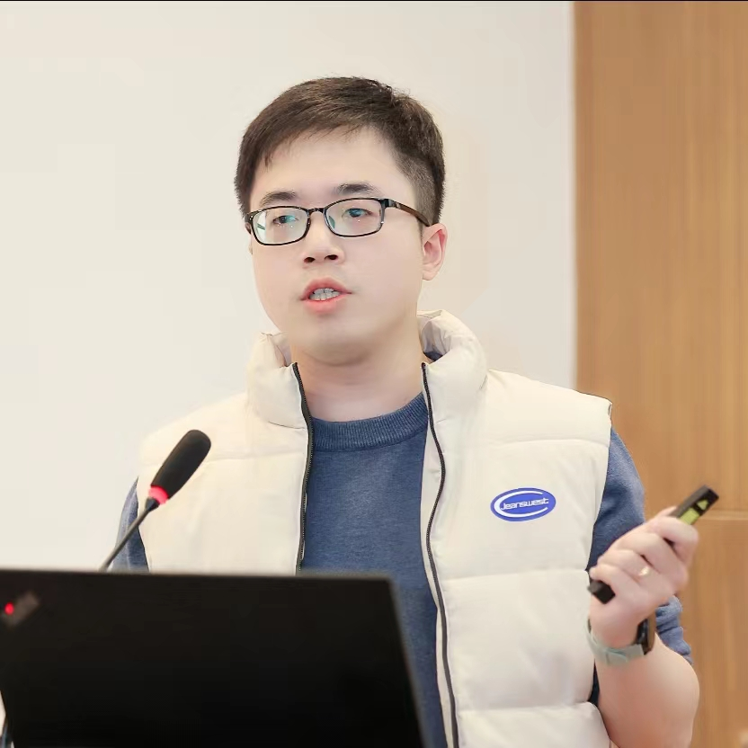 |
李俊诚，上海市青年科技英才“扬帆计划”获得者，入选斯坦福大学发布的全球前2%顶尖科学家榜单，获中国产学研合作创新成果一等奖。博士毕业于华东师范大学，师从张桂戌教授，曾担任香港中文大学博后研究员，合作导师为曾铁勇教授。2022年7月入职上海大学以来，主持包括国自然青年基金、上海市科委“科技创新行动计划”面上项目、上海市青年科技英才扬帆计划、上海高校青年教师重点资助项目及多个重点实验室开放课题。长期从事计算机视觉、自然图像/医学影像智能处理与人工智能等研究，取得了一系列原创性成果，在国际知名期刊和会议（如：ACM Computing Survey、IEEE TIP\TNNLS\TMM\TCSVT\TMI、CVPR、ECCV、ICCV、AAAI、IJCAI、MICCAI等）上发表论文50余篇（ESI高被引论文3篇）, 谷歌学术引用量超4000余次，其中单篇一作最高引用990余次。同时，还担任Mathematics和IET Computer Version期刊客座编辑、多个国际挑战赛的组织者和程序委员，并长期担任包括TPAMI、TIP、TNNLS、TMM、CVPR、ICCV、ECCV、MICCAI在内的多个国际期刊和会议审稿人。
| 智能影像计算实验室 | 团队公众号，欢迎关注！ |
| 我将担任 ECAI-25 的高级程序委员会成员（SPC）. |
| 1 篇论文（IEEE TMM）入选ESI高被引论文, 2025. |
| 我将担任 IJCAI-25 的程序委员会成员（PC）. |
| 1 篇论文（IEEE TIP）入选ESI高被引论文, 2024. |
| 入选全球前2%顶尖科学家榜单, 2023. |
| 1 篇论文（IEEE TMM）入选ESI高被引论文, 2023. |
| 入选上海市青年科技英才”扬帆计划“, 2023. |
| 祝贺！MSRN的引用次数已达1,000次！ |
| 一篇论文已被 ESWA 接收, 2025. |
| 一篇论文已被 IEEE JBHI 接收, 2025. |
| 一篇论文已被 IEEE TMI 接收, 2025. |
| 一篇论文已被 ESWA 接收, 2025. |
| 一篇论文已被 IEEE JBHI 接收, 2024. |
| 一篇论文已被 CIBM 接收, 2024. |
| 一篇论文已被 IEEE TCSVT 接收, 2024. |
| 一篇论文已被 IEEE TMM 接收, 2024. |
| 一篇论文已被 CIBM 接收, 2024. |
| 一篇论文已被 IEEE TIM接收, 2024. |
| 一篇论文已被 Information Processing and Management接收, 2024. |
| 一篇论文已被 IEEE TMI接收, 2024. |
| 一篇论文已被 ESWA接收, 2024. |
| 一篇论文已被 MICCAI接收, 2024 (Oral). |
| 一篇论文已被 Neural Networks接收, 2024. |
| 一篇论文已被 IEEE JBHI接收, 2024. |
| 一篇论文已被 ACM Computing Surveys接收, 2024. |
| 一篇论文已被 IEEE TMI接收, 2024. |
| 一篇论文已被 CVPR接收, 2024. |
| 一篇论文已被 IEEE TMI接收, 2024. |
| 一篇论文已被 CIBM接收, 2023. |
| 一篇论文已被 IEEE TMI接收, 2023. |
| 一篇论文已被 IEEE JBHI接收, 2023. |
| 一篇综述已被 中国图象图形学报接收, 2023. |
| 一篇论文已被 MICCAI接收, 2023. |
| 一篇论文已被 PR接收, 2023. |
| 一篇论文已被 IEEE TMM接收, 2023. |
| 一篇论文已被 IEEE TIP接收, 2023. |
| 一篇论文已被 IEEE TITS接收, 2023. |
| ------博后期间----------- |
| 一篇论文已被 Neurocomputing接收, 2022. |
| 一篇论文已被 IJCAI接收, 2022. |
| 一篇论文已被 IEEE TMM接收, 2022. |
| 一篇论文已被 AAAI接收, 2021. |
| ------博士期间--------- |
| 一篇论文已被 ICCV接收, 2021. |
| 一篇论文已被 ACMMM接收, 2021. |
| 一篇论文已被 IEEE TMM接收, 2021. |
| 一篇论文已被 PR接收, 2021. |
| 一篇论文已被 IEEE TMM接收, 2021. |
| 一篇论文已被 IEEE TCSVT接收, 2020. |
| 一篇论文已被 IEEE TMM接收, 2020. |
| 一篇论文已被 IEEE TNNLS接收, 2020. |
| 一篇论文已被 IEEE TIP接收, 2020. |
| 一篇论文已被 ECCV接收, 2018. |
| 中国产学研合作创新成果一等奖, 2023. |
| 研究奖学金资助, 香港中文大学, 2021. |
| 上海市优秀博士毕业生称号, 上海市教委, 2021. |
| 创智青年称号, 华东师范大学, 2020. (0.5%) |
| 优秀学生称号, 华东师范大学, 2020. (3.0%) |
| 智慧奖学金, 华东师范大学, 2020. (1.5%) |
| 博士生科研创新基金项目, 华东师范大学, 2020. |
| ICCV学生旅行资助, 2019. |
| 研究生奖学金, 华东师范大学, 2016-2020. |
| 获得"基于示例的RAW图像到RGB图像映射挑战赛"的感知赛道的全球第一名, (ICCV-AIM), 2019. |
| 获得"基于示例的RAW图像到RGB图像映射挑战赛"的保真赛道的全球第二名, (ICCV-AIM), 2019. |
| 获得"阿里巴巴 - 优酷视频增强和超分辨率挑战赛"全国第四名 和 “极客奖”, (4/1514), 2019. |
| 获得"中国多媒体大会 - 去雾挑战赛"全国第三名, 二等奖, (ChinaMM), 2018. |
| 获得"图像去雾挑战赛"全球第六名 和 “荣誉提名奖”, (CVPR-NTIRE), 2018. |
| 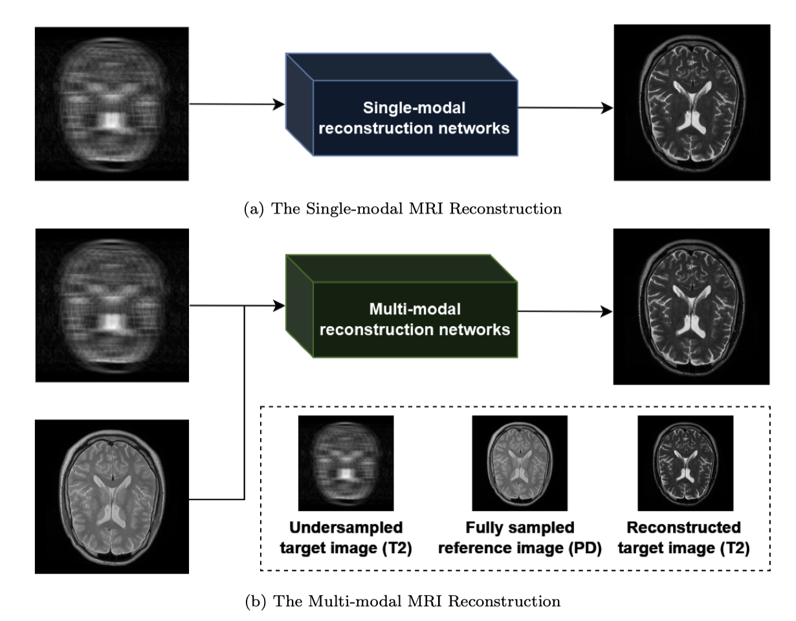 | Fast MRI Reconstruction: A Thorough Survey from Single-Modal to Multi-Modal【最新】 Weiyi Lyu, Xinming Fang, Chaoyan Huang, Minhua Lu*, Jun Wang, Jun Shi, Juncheng Lia∗ Expert Systems with Applications (ESWA), 2025. |
| 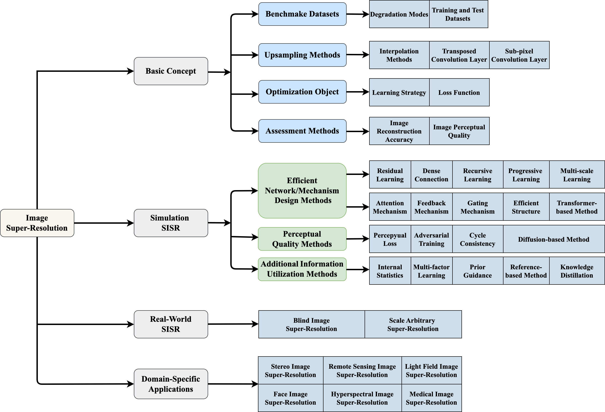 | A Systematic Survey of Deep Learning-based Single-Image Super-Resolution Juncheng Li, Zehua Pei, Wenjie Li, Guangwei Gao, Longguang Wang, Yingqian Wang, Tieyong Zeng |
| 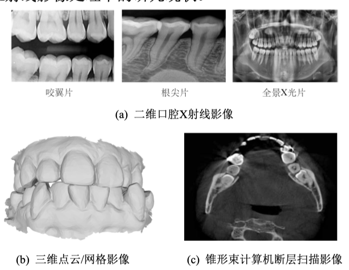 | 深度学习在口腔医学影像中的应用与挑战 Yang Zhao, Juncheng Li*, Bodong Cheng, Najun Niu, Longguang Wang, Guangwei Gao, Jun Shi 中国图象图形学报, 2023. |
| 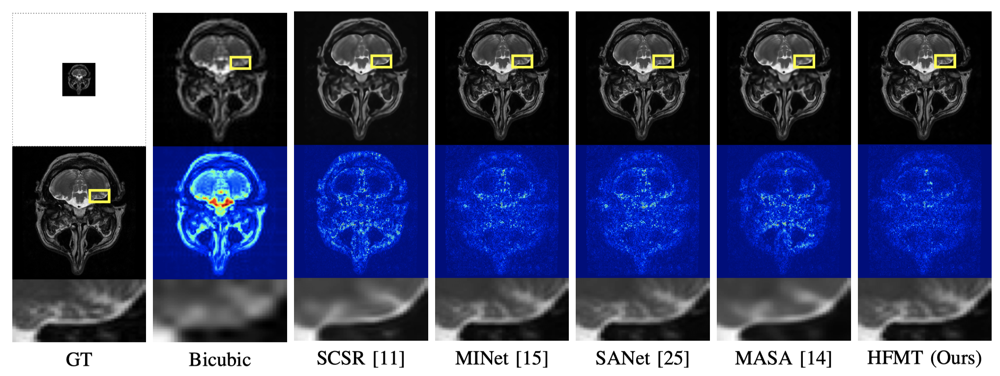 | MHigh-frequency Modulated Transformer for Multi-Contrast MRI Super-Resolution【最新】 Juncheng Li, Hanhui Yang, Qiaosi Yi, Minhua Lu, Jun Shi, and Tieyong Zeng IEEE Transactions on Medical Imaging (TMI), 2025. |
| 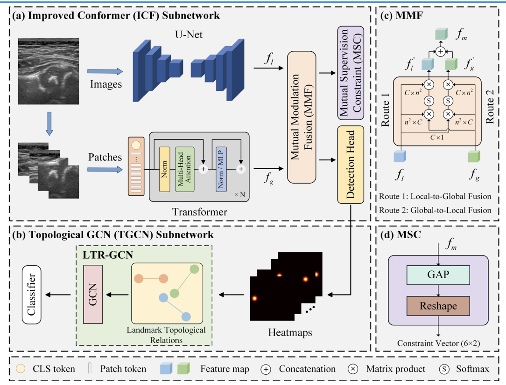 | Topological GCN Guided Improved Conformer for Detection of Hip Landmarks from Ultrasound Images【最新】 Tianxiang Huang, Jing Shi, Ge Jin, Juncheng Li, Jun Wang, Qian Wang, Jun Du, and Jun Shi, IEEE Journal of Biomedical and Health Informatics (JBHI), 2025. |
| 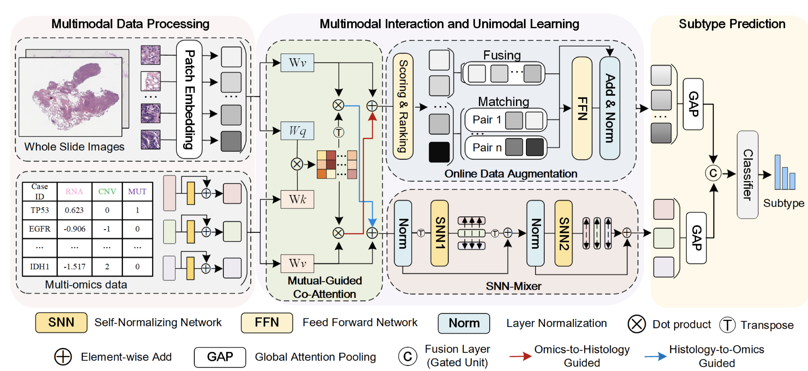 | Multimodal Co-attention Fusion Network with Online Data Augmentation for Cancer Subtype Classification Saisai Ding, Juncheng Li, Jun Wang, Shihui Ying, and Jun Shi IEEE Transactions on Medical Imaging (TMI), 2024. |
| 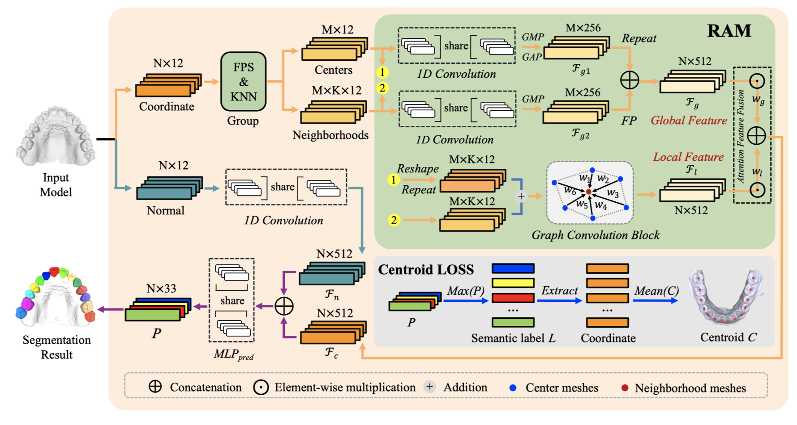 | Few Sampling Meshes-based 3D Tooth Segmentation via Region-Aware Graph Convolutional Network Yang Zhao, Bodong Cheng, Najun Niu, Jun Wang, Tieyong Zeng, Guixu Zhang, Jun Shi, Juncheng Li* Expert Systems with Applications (ESWA), 2024. |

|
Involution Transformer based U-Net for Landmark Detection in Ultrasound Images for Diagnosis of Infantile DDH Tianxiang Huang, Jing Shi*, Juncheng Li, Jun Wang, Jun Du, Jun Shi* IEEE Journal of Biomedical and Health Informatics (JBHI), 2024. |
| 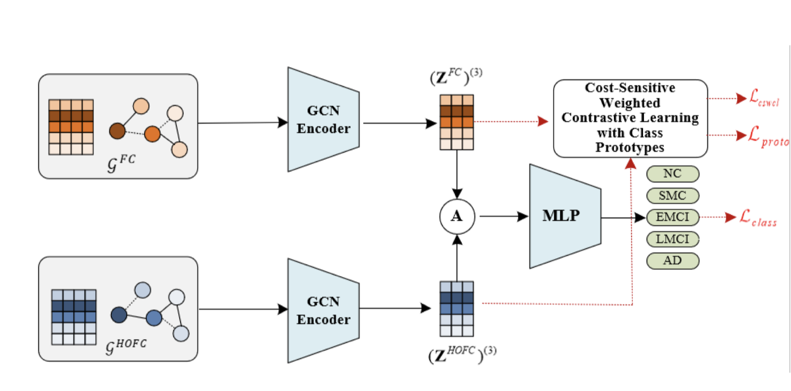 | Cost-Sensitive Weighted Contrastive Learning Based on Graph Convolutional Networks for Imbalanced Alzheimer’s Disease Staging Yan Hu, Jun Wang*, Hao Zhu, Juncheng Li, Jun Shi IEEE Transactions on Medical Imaging (TMI), 2024. |
| 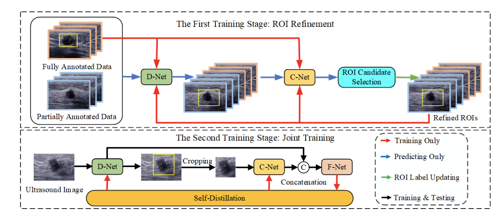 | Weakly Supervised Lesion Detection and Diagnosis for Breast Cancers with Partially Annotated Ultrasound Images Jian Wang, Liang Qiao, Shichong Zhou, Jin Zhou, Jun Wang, Juncheng Li, Shihui Ying, Cai Chang, Jun Shi* IEEE Transactions on Medical Imaging (TMI), 2024. |
| 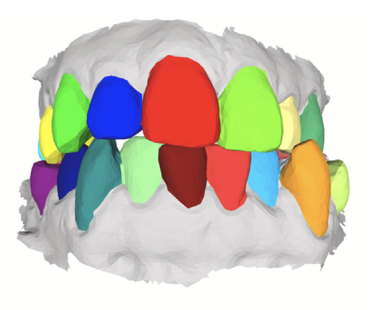 | A Fine-Grained Orthodontics Segmentation Model for 3D Intraoral Scan Data Juncheng Li, Bodong Cheng, Najun Niu, Guangwei Gao, Shihui Ying, Jun Shi, Tieyong Zeng Computers in Biology and Medicine (CIBM), 2023. |
| 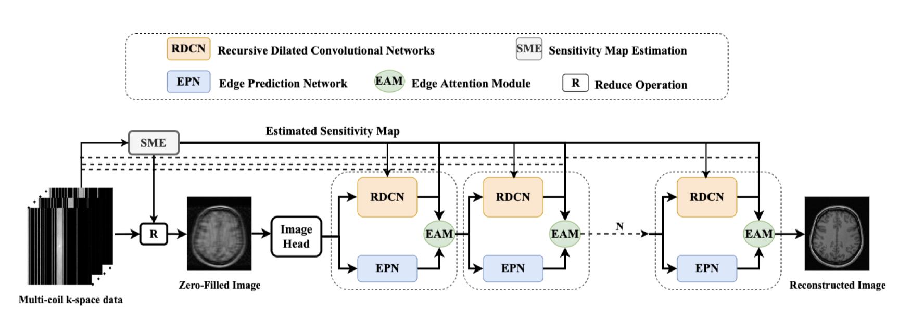 | Fast MRI Reconstruction via Edge Attention Hanhui Yang, Juncheng Li*, Lok Ming Lui, Shihui Ying, Jun Shi, and Tieyong Zeng* Communications in Computational Physics (CICP), 2023. |
| 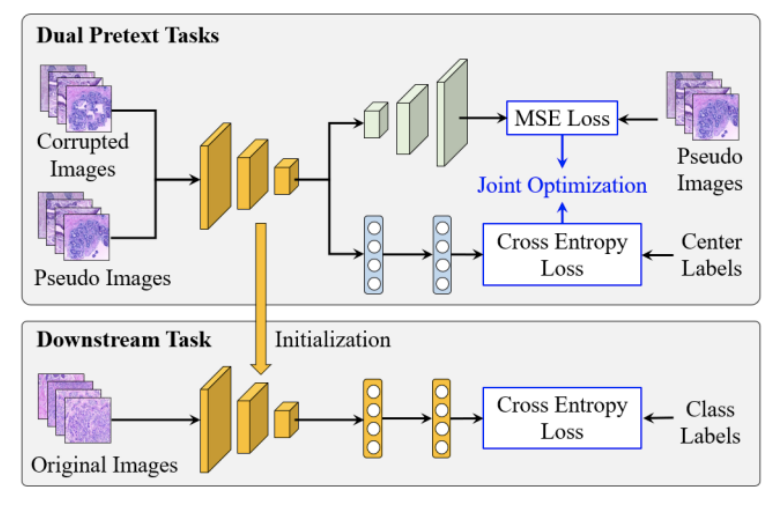 | Pseudo-Data based Self-Supervised Federated Learning for Classification of Histopathological Images Yuanming Zhang, Zheng Li, Xiangmin Han, Saisai Ding, Juncheng Li, Jun Wang, Shihui Ying, Jun Shi* IEEE Transactions on Medical Imaging (TMI), 2023. |
| 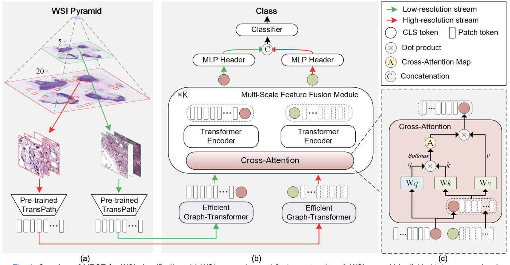 | Multi-scale Efficient Graph-Transformer for Whole Slide Image Classification Saisai Ding, Juncheng Li, Jun Wang, Shihui Ying, Jun Shi* IEEE Journal of Biomedical and Health Informatics (JBHI), 2023. |

|
Topological GCN for Improving Detection of Hip Landmarks from B-Mode Ultrasound Images【最新】 Tianxiang Huang, Jing Shi, Ge Jin, Juncheng Li, Jun Wang, Jun Du, and Jun Shi International Conference on Medical Image Computing and Computer-Assisted Intervention (MICCAI), 2024. |

|
Multi-Scale Prototypical Transformer for Whole Slide Image Classification Saisai Ding, Jun Wang, Juncheng Li, and Jun Shi* International Conference on Medical Image Computing and Computer-Assisted Intervention (MICCAI), 2023. |

|
WeaFU: Weather-Informed Image Blind Restoration via Multi-Weather Distribution Diffusion【最新】 Bodong Cheng, Juncheng Li*, Jun Shi, Yingying Fang, Guixu Zhang, Yin Chen, Tieyong Zeng, and Zhi Li* IEEE Transactions on Circuits and Systems for Video Technology (TCSVT), 2024. |

|
Cross-Receptive Focused Inference Network for Lightweight Image Super-Resolution (高被引论文, 25.01) Wenjie Li, Juncheng Li, Guangwei Gao, Weihong Deng, Jiantao Zhou, Jian Yang, and Guo-Jun Qi IEEE Transactions on Multimedia (TMM), 2024. |

|
EWT: Efficient Wavelet-Transformer for Single Image Denoising Juncheng Li, Bodong Cheng, Ying Chen, Guangwei Gao, Jun Shi, and Tieyong Zeng Neural Networks (NN), 2024. |

|
CTCNet: A CNN-Transformer Cooperation Network for Face Image Super-Resolution (高被引论文, 24.05, 24.09, 24.11, 25.01) Guangwei Gao#, Zixiang Xu#, Juncheng Li*, Jian Yang, Tieyong Zeng, and Guo-Jun Qi. IEEE Transactions on Image Processing (IEEE TIP), 2023. |

|
FBSNet: A Fast Bilateral Symmetrical Network for Real-Time Semantic Segmentation (高被引论文, 23.11, 24.01, 24.05, 24.07, 24.09, 24.11, 25.01) Guangwei Gao#, Guoan Xu#, Juncheng Li*, Yi Yu*, Huimin Lu, and Jian Yang |

|
Adjustable Super-Resolution Network via Deep Supervised Learning and Progressive Self-Distillation Juncheng Li, Faming Fang*, Tieyong Zeng, Guixu Zhang, and Xizhao Wang Neurocomputing (NC), 2022. |

|
Efficient and Accurate Multi-scale Topological Network for Single Image Dehazing Qiaosi Yi#, Juncheng Li#, Faming Fang*, Aiwen Jiang, and Guixu Zhang IEEE Transactions on Multimedia (IEEE TMM), 2021. |

|
MDCN: Multi-scale Dense Cross Network for Image Super-Resolution Juncheng Li, Faming Fang, Jiaqian Li, Kangfu Mei, and Guixu Zhang*. IEEE Transactions on Circuits and Systems for Video Technology (IEEE TCSVT), 2020. |

|
Luminance-aware Pyramid Network for Low-light Image Enhancement Jiaqian Li#, Juncheng Li#, Faming Fang*, Fang Li, and Guixu Zhang. |

|
Multi-level Edge Features Guided Network for Image Denoisingt Faming Fang, Juncheng Li, Yiting Yuan, Tieyong Zeng*, and Guixu Zhang*. IEEE Transactions on Neural Networks and Learning Systems (IEEE TNNLS), 2020. |

|
Soft-edge Assisted Network for Single Image Super-Resolution 【Hot】 Faming Fang, Juncheng Li, and Tieyong Zeng*. IEEE Transactions on Image Processing (IEEE TIP), 2020. |
| 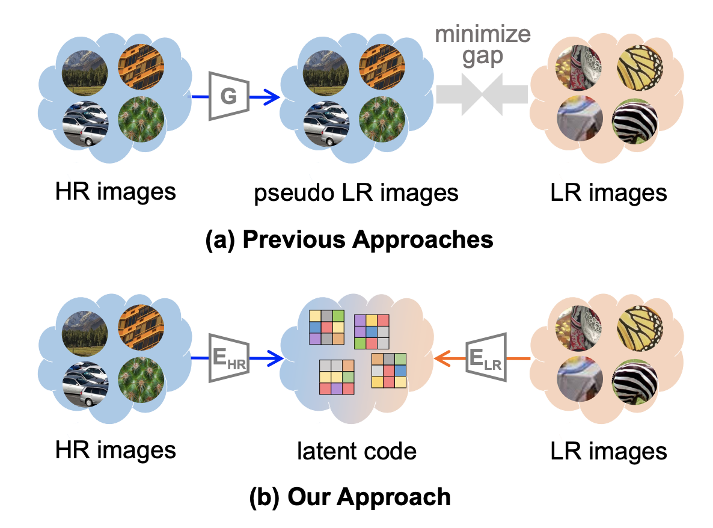 | Learning Coupled Dictionaries from Unpaired Data for Image Super-Resolution 【New】 Longguang Wang, Juncheng Li, Yingqian Wang, Qingyong Hu, and Yulan Guo*. Conference on Computer Vision and Pattern Recognition (CVPR), 2024. |

|
Lightweight Bimodal Network for Single-Image Super-Resolution via Symmetric CNN and Recursive Transformer Guangwei Gao#, Zhengxue Wang#, Juncheng Li*, Wenjie Li, Yi Yu, and Tieyong Zeng International Joint Conference on Artificial Intelligence (IJCAI), 2022. |
| 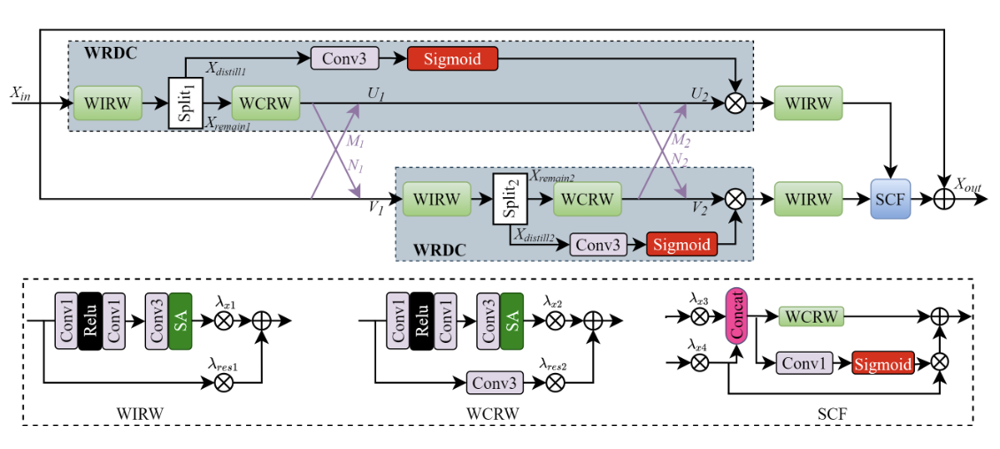 | Feature Distillation Interaction Weighting Network for Lightweight Image Super-Resolution Guangwei Gao#, Wenjie Li#, Juncheng Li*, Fei Wu, Huimin Lu, and Yi Yu Association for the Advancement of Artificial Intelligence (AAAI), 2022. |
| 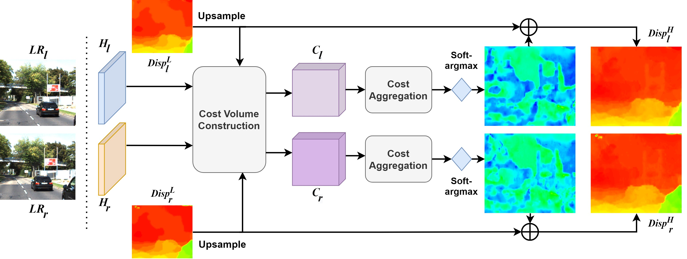 | Feedback Network for Mutually Boosted Stereo Image Super-Resolution and Disparity Estimation Qinyan Dai, Juncheng Li, Qiaosi Yi, Faming Fang*, and Guixu Zhang. ACM International Conference on Multimedia (ACM MM), 2021. |
| 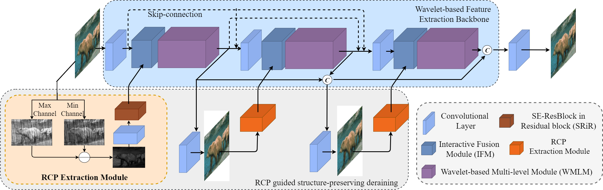 | Structure-Preserving Deraining with Residue Channel Prior Guidance Qiaosi Yi, Juncheng Li, Qinyan Dai, Faming Fang*, Guixu Zhang, and Tieyong Zeng. International Conference on Computer Vision (ICCV), 2021. |
| 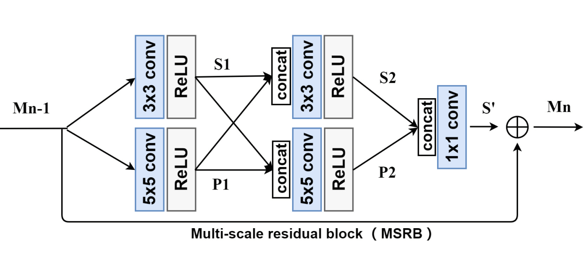 | Multi-scale Residual Network for Image Super-Resolution 【Hot】【引用：970+】 Juncheng Li, Faming Fang*, Kangfu Mei, and Guixu Zhang. European Conference on Computer Vision (ECCV), 2018. |
| 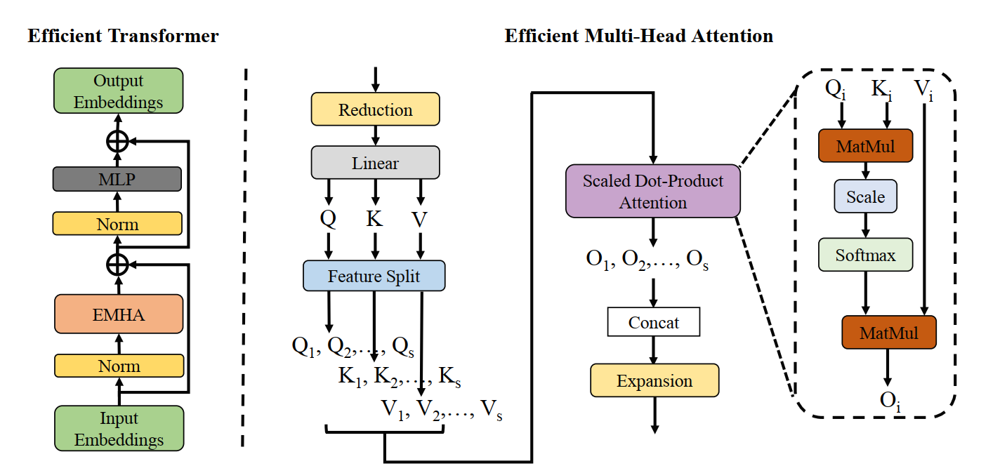 | Transformer for Single Image Super-Resolution 【Hot】【引用：600+】 Zhisheng Lu#, Juncheng Li#, Hong Liu*, Chaoyan Huang, Linlin Zhang, and Tieyong Zeng The Conference on Computer Vision and Pattern Recognition Workshop (CVPR Workshop), 2022. |

|
Multiple Degradation and Reconstruction Network for Single Image Denoising via Knowledge Distillation Juncheng Li, Hanhui Yang, Qiaosi Yi, Faming Fang, Guangwei Gao, Tieyong Zeng*, and Guixu Zhang The Conference on Computer Vision and Pattern Recognition Workshop (CVPR Workshop), 2022. |
| 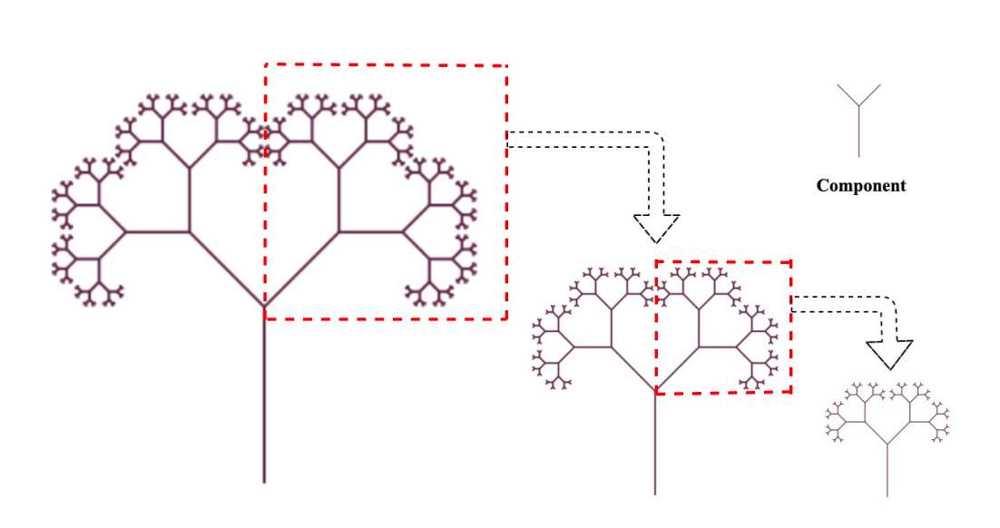 | Lightweight and Accurate Recursive Fractal Network for Image Super-Resolution Juncheng Li, Yiting Yuan, Kangfu Mei, and Faming Fang*. International Conference on Computer Vision Workshop (ICCV Workshop), 2019. |
| IEEE Transactions on Pattern Analysis and Machine Intelligence (TPAMI) |
| IEEE Transactions on Image Processing (TIP) |
| IEEE Transactions on Neural Networks and Learning System (TNNLS) |
| IEEE Transactions on Cybernetics (TCYB) |
| IEEE Transactions on Multimedia (TMM) |
| IEEE Transactions on Broadcasting (TB) |
| IEEE Transactions on Circuits and Systems for Video Technology (TCSVT) |
| Medical Image Analysis |
| IEEE Journal of Biomedical and Health Informatics (JBHI) |
| Computers in Biology and Medicine (CIBM) |
| Information Science (INS) |
| Pattern Recognition (PR) |
| Knowledge-Based Systems (KBS) |
| Computer Vision and Image Understanding (CVIU) |
| IEEE Signal Processing Letters (SPL) |
| ... |
| Conference on Computer Vision and Pattern Recognition (CVPR) |
| European Conference on Computer Vision (ECCV) |
| International Conference on Computer Vision (ICCV) |
| International Joint Conference on Artificial Intelligence (IJCAI) |
| ACM Multimedia (ACMMM) |
| International Conference on Medical Image Computing and Computer-Assisted Intervention (MICCAI) |
| ... |